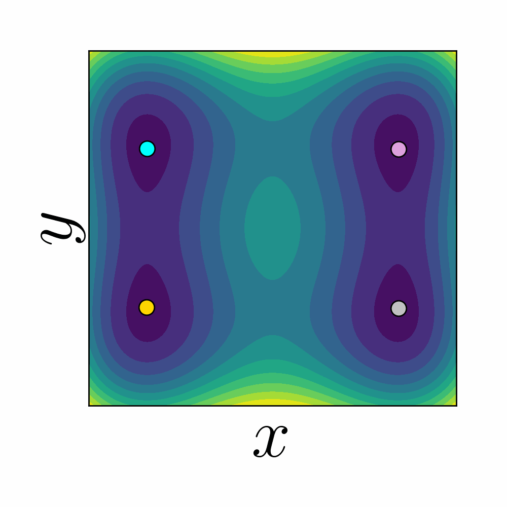

Christian Pratt
I am a postdoctoral researcher working with Kerem Çamsarı
at UC Santa Barbara.
My physics PhD advisor was Jim Crutchfield at UC Davis.
I am interested in the co-design of algorithms and hardware for energy-efficient unconventional computers.
Click to reveal email
Before joining OPUS, I was a physics graduate student in the Complexity Sciences Center at UC Davis working with Professor Jim Crutchfield. I investigated the fundamental physics of computing using dynamical systems theory, stochastic thermodynamics, and superconducting circuit theory for my dissertation. Specifically, I used the potential energy landscapes that are generated by Josephson junction-based superconducting devices as a platform for performing energy-efficient computations. My peer-reviewed work extended conventional methods for deriving a device's Langevin equations of motion, and generalized the Landauer information erasure operation to higher dimensions.

Metastable Dynamical Computing with Energy Landscapes: A Primer
Christian Z. Pratt, Kyle J. Ray, and James P. Crutchfield.
To appear in Chaos: An Interdisciplinary Journal for Nonlinear Science. 2026.
arXiv •
PDF
Read summary
Any stochastic dynamical system that generates a sufficiently-controllable potential energy landscape is a candidate for the dynamical computing paradigm. We review the mechanics of this computing framework, beginning from its fundamental underpinnings in the metastable regime. This work provides an entry way for broad audiences to understand the generality of this paradigm.

Controlled erasure as a building block for universal thermodynamically-robust superconducting computing
Christian Z. Pratt, Kyle J. Ray, and James P. Crutchfield.
Chaos: An Interdisciplinary Journal for Nonlinear Science. 2025.
Article •
arXiv •
PDF
Read summary
We introduce the Control Erasure (CE) protocol, which generalizes the Landauer information erasure protocol to an effective two-dimensional potential energy landscape.
Performing a CE involves dynamically changing the landscapes' energy minima---corresponding to the landscape's darker purple colors---in order to control what information is erased or stored. An example CE involves erasing the yellow particle into the cyan particle's location, while storing the silver and pink particles within their respective minima.
Executing successive CEs can lead to performing a NAND gate---an irreversible universal logic gate that is commonly used to construct modern computing architectures. We show how to carry out a NAND gate with a device created by inductively coupling two superconducting quantum interference devices (SQUIDs): This device can serve as a computationally fast and energy efficient universal computing substrate!

Extracting equations of motion from superconducting circuits
Christian Z. Pratt, Kyle J. Ray, and James P. Crutchfield.
Physical Review Research. 2025.
Article •
arXiv •
PDF
Read summary
Previously, the network theory approach to analyzing superconducting circuits had limitations, such as only being able to consider at most one linear inductor per circuit loop. We void this assumption and address its consequences, and by doing so, we extended this approach to be able to handle more complicated superconducting circuits.
As an example, we derived the potential energy potential surface generated by a device constructed from two inductively-coupled SQUIDs. This landscape will serve as a test-bed for constructing energy efficient universal logic gates, and investigating their thermodynamic performance.